공유압기능사 (2011-10-09 기출문제)
1과목: 임의구분
1. 비중이 약 2.7로 가볍고 내식성과 가공성이 좋으며 전기 및 열전도도가 높은 재료는?
- 금(Au)
- 알루미늄(Al)
- 철(Fe)
- 은(Ag)
(정답률: 84%)

2. 순철의 성질에 관한 사항 중 틀린 것은?
- 상온에서 연성과 전성이 크다.
- 용융점의 온도는 539[℃] 정도이다.
- 단접하기 쉽고 소성가공이 용이하다.
- 용접성이 좋다.
(정답률: 68%)
3. 노 내에서 페로 실리콘(Fe-Si), 알루미늄(Al) 등의 강 탈산제를 첨가하여 충분히 탈산시킨 것으로써 표면에 헤어크랙이 생기기 쉬우며 상부에 수축관이 생기기 쉬운 강괴는?
- 킬드강
- 림드강
- 세미킬드강
- 캡트강
(정답률: 64%)
4. 다음 중 응력의 단위를 옳게 표시한 것은?
- [N/m]
- [N/m2]
- [Nㆍm]
- [N]
(정답률: 66%)
5. 다음 중 자유롭게 휠 수 있는 축은?
- 전동 축
- 크랭크 축
- 중공 축
- 플렉시블 축
(정답률: 80%)
6. 제강할 때 편석을 일으키기 쉬우며, 이 원소의 함유량이 .25[%] 정도 이상이면 연신율이 감소하고, 냉간취성을 일으키는 원소는?
- 인
- 황
- 망간
- 규소
(정답률: 63%)
7. 니켈-구리계 합금 중 구리에 니켈을 60~70[%] 정도 첨가한 것으로 내열, 내식성으로 우수하므로 터빈 날개, 펌프 임펠러 등의 재료로 사용되는 것은?
- 모넬 메탈
- 콘스탄탄
- 로 메탈
- 인코넬
(정답률: 57%)
8. 전동축의 회전력이 40[kgfㆍm]이고 회전수가 300[rpm]일 때 전달마력은 약 몇 [PS]인가?
- 12.3
- 16.8
- 123
- 168
(정답률: 63%)
9. 공기압 회로에서 압축공기의 역류를 방지하고자 하는 경우에 사용하는 밸브로서, 한쪽방향으로만 흐르고 반대 방향으로는 흐르지 않는 밸브는?
- 체크 밸브
- 셔틀 밸브
- 급속배기 밸브
- 시퀀스 밸브
(정답률: 84%)
10. 공유압 변환기를 에어 하이드로 실린더와 조합하여 사용할 경우 주의사항으로 틀린 것은?
- 에어하이드로 실린더보다 높은 위치에 설치한다.
- 공유압 변환기는 수평방향으로 설치한다.
- 열원의 가까이에서 사용하지 않는다.
- 작동유가 통하는 배관에 누설, 공기 흡입이 없도록 밀봉을 철저히 한다.
(정답률: 84%)
11. 유압 장치의 과부하 방지에 사용되는 기기는?
- 시퀀스 밸브
- 카운터 밸런스 밸브
- 릴리프 밸브
- 감압 밸브
(정답률: 69%)
12. 압력 시퀀스 밸브가 하는 일을 나타낸 것은?
- 자유낙하의 방지
- 배압의 방지
- 구동요소의 순차작동
- 무부하 운전
(정답률: 78%)
13. 다음 그림의 기호가 나타내는 것은?
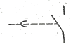
- 수동조작 스위치 a접점
- 수동조작 스위치 b접점
- 소자 지연 타이머 a접점
- 여자 지연 타이머 a접점
(정답률: 59%)
14. 공기압 유량제어 밸브 사용상의 주의사항으로 틀린 것은?
- 유량제어 밸브는 되도록 제어대상에 멀리 설치하는 것이 제어성의 면에서 바람직하다.
- 공기압 실린더의 속도제어에는 공기의 압축성을 고려하여 미터 아웃 방식을 사용한다.
- 유량조절이 끝나면 고정용 나사를 꼭 고정하는 것을 잊지 않도록 한다.
- 크기의 선정도 중요하다.
(정답률: 66%)
15. 검출용 스위치 중 접촉형 스위치가 아닌 것은?
- 마이크로 스위치
- 광전 스위치
- 리밋 스위치
- 리드 스위치
(정답률: 75%)
16. 유압 작동유의 점도가 너무 높을 경우 유압장치의 운전에 미치는 영향이 아닌 것은?
- 캐비테이션(Cavitation)의 발생
- 배관 저항에 의한 압력감소
- 유압장치 전체의 효율 저하
- 응답성의 저하
(정답률: 59%)
17. 다음 설명 중 공기압 모터의 장점은?
- 에너지의 변환 효율이 낮다.
- 제어속도를 아주 느리게 할 수 있다.
- 큰 힘을 낼 수 있다.
- 과부하 시 위험성이 없다.
(정답률: 70%)
18. 실린더를 이용하여 운동하는 형태가 실린더로부터 떨어져 있는 물체를 누르는 형태이면 이는 어떤 부하인가?
- 저항부하
- 관성부하
- 마찰부하
- 쿠션부하
(정답률: 48%)
19. 구동부가 일을 하지 않아 회로에서 작동유를 필요로 하지 않을 때 작동유를 탱크로 귀환시키는 것은?
- AND 회로
- 무부하 회로
- 플립플롭 회로
- 압력설정 회로
(정답률: 76%)
20. 유압장치의 특징과 거리가 먼 것은?
- 소형장치로 큰 힘을 발생한다.
- 작동유로 인한 위험성이 있다.
- 일의 방향을 쉽게 변환시키기 어렵다.
- 무단변속이 가능하고 정확한 위치제어를 할 수 있다.
(정답률: 71%)
2과목: 임의구분
21. 입력조절 밸브 사용 시 주의사항으로 공기압 기기의 전공기 소비량이 압력조절 밸브에서 공급되었을 때 압력조절 밸브의 2차 압력이 몇 [%] 이하로 내려가지 않도록 하는 것이 바람직한가?
- 60
- 70
- 80
- 90
(정답률: 60%)
22. 다음의 기호가 나타내는 기기를 설명한 것 중 옳은 것은?
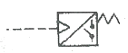
- 실린더의 로킹 회로에서만 사용된다.
- 유압 실린더의 속도제어에서 사용된다.
- 회로의 일부에 배압을 발생시키고자 할 때 사용한다.
- 유압신호를 전기신호로 전환시켜준다.
(정답률: 61%)
23. 토출 압력에 의한 분류에서 저압으로 구분되는 공기 압축기의 압력범위는?
- 1[kgf/cm2] 이하
- 7~8[kgf/cm2]
- 10~15[kgf/cm2]
- 15[kgf/cm2] 이상
(정답률: 60%)
24. 압력제어 밸브에 해당되는 것은?
- 셔틀 밸브
- 체크 밸브
- 차단 밸브
- 릴리프 밸브
(정답률: 76%)
25. 다음 중 공기압 장치의 기본시스템이 아닌 것은?
- 압축공기 발생장치
- 압축공기 조정장치
- 공기제어 밸브
- 유압 펌프
(정답률: 86%)
26. 펌프의 송출압력이 50[kgf/cm2], 송출량이 20[L/min]인 유압펌프의 펌프동력은 약 얼마인가?
- 1.5[PS]
- 1.7[PS]
- 2.2[PS]
- 3.2[PS]
(정답률: 67%)
27. 유압회로에서 어떤 부분 회로의 압력을 주회로의 압력보다 저압으로 사용하고자 할 때 사용하는 밸브는?
- 배압 밸브
- 감압 밸브
- 압력 보상형 밸브
- 셔틀 밸브
(정답률: 86%)
28. 유압장치에서 유량제어 밸브로 유량을 조정할 경우 실린더에서 나타나는 효과는?
- 유압의 역류조절
- 운동속도의 조절
- 운동방향의 결정
- 정지 및 시동
(정답률: 84%)
29. 압력의 크기에 의해 제어되거나 압력에 큰 영향을 미치는 것은?
- 논 리턴 밸브
- 방향제어 밸브
- 압력제어 밸브
- 유량제어 밸브
(정답률: 87%)
30. 그림의 연결구를 표시하는 방법에서 틀린 부분은?
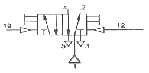
- 공급라인 : 1
- 제어라인 : 4
- 작업라인 : 2
- 배기라인 : 3
(정답률: 69%)
31. 다음은 어떤 밸브를 나타내는 기호인가?
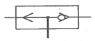
- 급속배기 밸브
- 셔틀 밸브
- 2압 밸브
- 파일럿 조작 밸브
(정답률: 66%)
32. 공기건조 방식 중 -70[℃] 정도까지의 저노점을 얻을 수 있는 공기건조 방식은?
- 흡수식
- 냉각식
- 흡착식
- 저온건조방식
(정답률: 78%)
33. 습공기 내에 있는 수증기의 양이나 수증기의 압력과 포화상태에 대한 비를 나타내는 것은?
- 절대습도
- 상대습도
- 대기습도
- 게이지습도
(정답률: 57%)
34. 축 동력을 계산하는 방법에 대한 설명으로 틀린 것은?
- 설정압력과 토출량을 곱하여 계산한다.
- 효율은 안전을 위하여 약 75[%]로 한다.
- 효율은 체적 효율만을 고려한다.
- 단위는 [kW]를 사용할 수 있다.
(정답률: 72%)
35. 공압 조합 밸브로 1개의 정상상태에서 닫힌 3/2-Way밸브와 1개의 정상상태 열림 3/2-Way 밸브, 2개의 속도제어 밸브로 구성되어 있는 기기로, 두개의 속도제어 밸브를 조정하면 여러 가지 사이클 시간을 얻을 수 있으며, 진동수는 압력과 하중에 따라 달라지게 하는 제어기기는 무엇인가?
- 가변 진동발생기
- 압력증폭기
- 시간지연 밸브
- 공유압 조합기기
(정답률: 54%)
36. 제어 작업이 주로 논리제어의 형태로 이루어지는 AND, OR, NOT, 플립플롭 등의 기본 논리연결을 표시하는 기호도를 무엇이라 하는가?
- 논리도
- 회로도
- 제어선도
- 변위단계선도
(정답률: 86%)
37. 공압 실린더 중 단동 실린더가 아닌 것은?
- 피스톤 실린더
- 격판 실린더
- 벨로즈 실린더
- 로드리스 실린더
(정답률: 61%)
38. 축압기에 대한 설명 중 틀린 것은?
- 맥동이 발생한다.
- 압력보상이 된다.
- 충격 완충이 된다.
- 유압에너지를 축적할 수 있다.
(정답률: 57%)
39. 4극의 유도전동기에 50[Hz]의 교류 전원을 가할 때 동기속도[rpm]는?
- 200
- 750
- 1,200
- 1,500
(정답률: 48%)
40. 동일한 전원에 연결된 여러 개의 전등은 다음 중 어느 경우가 가장 밝은가?
- 각 등을 직ㆍ병렬 연결할 때
- 각 등을 직렬 연결할 때
- 각 등을 병렬 연결할 때
- 전등의 연결방법과는 관계없다.
(정답률: 66%)
3과목: 임의구분
41. 다음 중 지시계기의 구비조건이 아닌 것은?
- 눈금이 균등하거나 대수 눈금일 것
- 절연내력이 낮을 것
- 튼튼하고 취급이 편리할 것
- 지시가 측정값의 변화에 신속히 응답할 것
(정답률: 85%)
42. 사인파 교류의 순시값이 v=Vsinωt[V}이면 실횻값은? (단, V는 최댓값이다.)
- V/√2
- V
- √2V
- 2V
(정답률: 45%)
43. 내부저항 5[kΩ]의 전압계 측정범위를 10배로 하기 위한 방법은?
- 15[kΩ]의 배율기 저항을 병렬 연결한다.
- 15[kΩ]의 배율기 저항을 직렬 연결한다.
- 45[kΩ]의 배율기 저항을 병렬 연결한다.
- 45[kΩ]의 배율기 저항을 직렬 연결한다.
(정답률: 61%)
44. 임피던스 Z[Ω]인 단상 교류 부하를 단상 교류 전원 V[V]에 연결하였을 경우 흐르는 전류가 I[A] 라면 단상전력 P를 구하는 식은? (단, θ : 전압과 전류의 위상차, cosθ : 역률)(오류 신고가 접수된 문제입니다. 반드시 정답과 해설을 확인하시기 바랍니다.)
- P=VIcosθ
- P=√3VIcosθ
- P=VRcosθ[W]
- P=VIsinθ[W]
(정답률: 59%)
45. 시간의 변화에 따라 각 계전기나 접점 등의 변화 상태를 시간적 순서에 의해 출력상태를 (On/Off), (H/L), (0/1) 등으로 나타낸 것은?
- 실체 배선도
- 플로 차트
- 논리 회로도
- 타임 차트
(정답률: 81%)
46. 정전용량 C만의 회로에 v==√2Vsinωt[V]인 사인파 전압을 가할 때 전압과 전류의 위상관계는?
- 전류는 전압보다 위상이 90° 뒤진다.
- 전류는 전압보다 위상이 30° 앞선다.
- 전류는 전압보다 위상이 30° 뒤진다.
- 전류는 전압보다 위상이 90° 앞선다.
(정답률: 68%)
47. 가동코일형 전류계에서 전류측정범위를 확대시키는 방법은?
- 가동코일과 직렬로 분류기 저항을 접속한다.
- 가동코일과 병렬로 분류기 저항을 접속한다.
- 가동코일과 직렬로 배율기 저항을 접속한다.
- 가동코일과 직ㆍ병렬로 배율기 저항을 접속한다.
(정답률: 57%)
48. 기기의 보호나 작업자의 안전을 위해 기기의 동작 상태를 나타내는 접점으로 기기의 동작을 금지하는 회로는?
- 인칭 회로
- 인터록 회로
- 자기유지 회로
- 자기유지처리 회로
(정답률: 85%)
49. 열동계전기의 기호는?
- DS
- THR
- NFB
- S
(정답률: 81%)
50. 전력량 1[J]은 몇 열량 에너지[cal]인가?
- 0.24
- 4.2
- 86
- 860
(정답률: 72%)
51. 다음 중 입력요소는?
- 전동기
- 전자계전기
- 리밋스위치
- 솔레노이드 밸브
(정답률: 67%)
52. 하나의 회전기를 사용하여 교류를 직류로 바꾸는 것은?
- 셀렌 정류기
- 실리콘 정류기
- 회전 변류기
- 아산화동 정류기
(정답률: 70%)
53. 직류 전동기에서 운전 중에 항상 브러시와 접촉하는 것은?
- 전기자
- 계자
- 정류자
- 계철
(정답률: 59%)
54. 다음 그림에서 A부의 치수는 얼마인가?
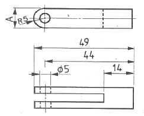
- 5
- 10
- 15
- 14
(정답률: 75%)
55. 선은 굵기에 따라 가는 선, 굵은 선, 아주 굵은 선의 세 종류로 구분하는데 굵기의 비율로 가장 올바른 것은?
- 1 : 2 : 3
- 1 : 2 : 4
- 1 : 3 : 5
- 1 : 2 : 5
(정답률: 67%)
56. 면에서 비례척이 아님을 나타내는 기호는?
- NS
- NPS
- NT
- PQ
(정답률: 85%)
57. 그림과 같은 투상도의 평면도와 우측면도에 가장 적합한 정면도는?
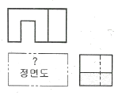
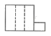
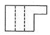
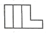
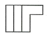
(정답률: 68%)
58. KS 용접기호 중에서 그림과 같은 용접기호는 무슨 용접기호인가?
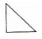
- 심 용접
- 비드 용접
- 필릿 용접
- 점용접
(정답률: 74%)
59. 그림과 같은 배관도시기호가 있는 관에는 어떤 종류의 유체가 흐르는가?
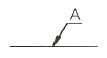
- 공기
- 연료가스
- 증기
- 물
(정답률: 82%)
60. 개스킷, 박판, 형강 등에서 절단면이 얇은 경우 단면도 표시법으로 가장 적합한 설명은?
- 절단면을 검게 칠한다.
- 실제치수와 같은 굵기의 아주 굵은 1점 쇄선으로 표시한다.
- 얇은 두께의 단면이 인접되는 경우 간격을 두지 않는 것이 원칙이다.
- 모든 인접 단면과의 간격은 0.5[mm] 이하의 간격이 있어야 한다.
(정답률: 55%)